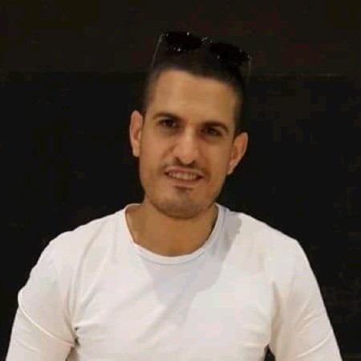

Ohad Esperansa

Summary
Software Engineer (B.Sc), with extensive experience in design and
development,
knowledge in software architectures and development, self learner,
passionate about software design,
very interested in expending my knowledge in the software development
field.
Education
-
Bachelor of Science (BSc), Software Engineering, Ort Braude College.
(2011-2016)
Work Experience
-
Software Development Engineer - Confedential Company
Dec 2022 - Oct 2023
Developing lab infrastructures for running simulations and for
research purposes.
- Software development in C++.
- Automation development in both .NET C# and C++.
-
Interaction with hardware (test equipment) using the protocols:
TCP/IP, UDP, Serial (USB).
- Configurations in XML files.
- Unit Tests with Google Tests.
- Environments: Visual Studio 2022 Enterprise.
- Version control via Azure DevOps and Git.
-
Software Engineer - Hexagon PPM
Aug 2018 - Nov 2022
Developing applications for engineering companies to design an
electrical network,
starting from the primary power sources and up to the consumers.
- Application: .NET C# - Winforms.
-
DBs: Oracle and MSS, working with Toad and Microsoft SQL Server
environments.
- Unit Tests with Microsoft unit test framework.
- Working in Agile methodology with Azure DevOps.
-
Handling appeals from internal staff and from global customers
regarding bugs and new features requests.
-
Software Engineer in Tests - Qualitest (at Confidential Company)
Apr 2015 - Aug 2018
.NET C#, as a part of an agile 'tools' team.
-
C# tests automation development: infrastructure & scripts, for
WPF tools.
- Testing frameworks: Coded UI & Unit Tests.
Skills
- Software Developement
- C# Development
- C++ Development
- Software Design
Awards and Certifications
-
Pluralsight, Design Patterns in C++: Structural - Adapter to Decorator
by Dror Helper
-
Udemy, Beginning C++ Programming - From Beginner to Beyond by Dr. Frank
Mitropoulos
-
Pluralsight, Design Patterns in C++ 20: Creational by Zacary Bennett
-
Udemy, Learn Parallel Programming with C# and .NET by Dmitri Nesteruk
- Learn the Art of Writing clean Code by Mosh Hamedani
-
C# Developers: Double Your Coding Speed with Visual Studio by Mosh
Hamedani
Other
Linkedin